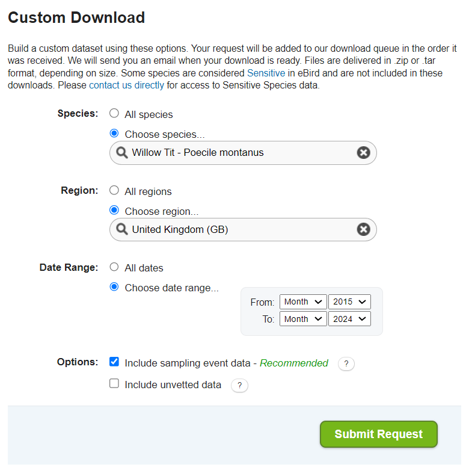

3 Methodology
The eBird data used for this project cover a ten-year period (2014-2024) during the pre-breeding season (February - April) when Willow Tits are establishing territories.
Originally, data covered the period 2015-2024. However, an unknown issue with the 2024 data prevented accurate mapping. Therefore, it was removed and 2014 was included to ensure a 10-year period was covered. The same filtering and processing was done for these data.
The full R code used to download, filter, and process the dataset is available in the file WillowTit_population_modeling on GitHub.
3.1 Downloading the data
Data were downloaded on 16 July, 2024 from eBird via the Data Access page. A custom download was performed to get a subset of the dataset by specifying the species (Willow Tit - Poecile montanus) for the United Kingdom between 2015 - 2024. Sampling event data were included in order to get both the observation (EBD) and checklist (SED) data (see A note on eBird data).

3.2 Filtering and processing
Both the EBD and SED datasets were then imported to RStudio for further filtering and processing using the R programming language following the guide Best Practices for Using eBird data.
Each of the datasets were filtered in the same way so that only observation and checklist data between February and April were kept.
The study-region (United Kingdom) contains checklists falling in the ocean off the costs. These were removed by creating a 1 km buffer around the study region.
3.2.1 Coordinate reference system
Checklist locations (latitude and longitude) were converted to points geometries using the EPSG.io coordinate system.
3.2.2 Zero-filling
Where a species is rare or of particular interest, a sampling bias can be introduced by observers seeking out the species and inflating the numbers. One way to mitigate this bias and ensure a more reliable estimate is to use presence-absence data (Strimas-Mackey 2023), (Guillera-Arroita et al. 2015).
eBird data contains presence-only data. But where absence data is also required, data can be filtered to complete checklists only (where all species present were recorded). In this way absence can be inferred for those checklists that did not record the species. Zero-filling, or a count of 0, was performed on the data.
3.2.3 Combining the datasets
In the process of zero-filling, the observation and checklist data are combined into a single dataset making the data easier to work with.
3.2.4 Data transformation
Several of the variables were transformed to make them more useful for analysis and modeling.
Time was converted to a decimal value between 0 and 24 to give hours since midnight.
For stationary checklists, a value of 0 was given for distance.
A variable for speed was created (distance / time).
Checklists with an observation count given as X (i.e. species present) was converted to NA so it would be stored as an integer.
The date was split into the year and the day of the year.
3.2.5 Reducing the variation in effort
The variation in effort between checklists can make inferences challenging since it is associated with variation in detectability. See sections 2.2 Challenges associated with eBird data, and 2.7.1 Spacial precision in (Strimas-Mackey 2023) for a discussion on these challenges.
The effort variation of checklists was reduced following the recommendations of Strimas et.al. Checklists were restricted to: less than or equal to 6 hours duration; 10 km in distance; speeds under 100 kilometers per hour; and 10 or fewer observers.
3.2.6 Test-train split
To test the predictive performance of the model, a testing dataset was created. The data were randomly split into 80% for training and 20% for testing. The variable type was created to indicate which checklist fell in the test or train category.
3.2.7 Removed variables
A number of redundant variables such as country and county codes were removed.
Only variables needed for modeling were kept. These included: checklist_id; observer_id; type; observation_count; species_observed; state_code; locality_id; latitude; longitude; protocol_type; all_species_reported; observation_date; year; day_of_year; hours_of_day; effort_hours; effort_distance_km; effort_speed_kmph; number_observers.
3.2.8 Overview of the dataset
The final dataset contains 269,775 observations where each observation corresponds to a checklist with either a detection or non-detection of Willow Tit.